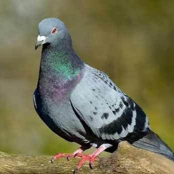

Marketplace
Contacto



Nombre: Palomino
Palomino es una pequeña paloma que está buscando una familia que le brinde cariño, protección y un lugar seguro donde pueda crecer.
Edad: 2 meses
Con apenas 2 meses de edad, Palomino se encuentra en una etapa temprana de crecimiento. Necesita atención, paciencia y cuidados especiales para desarrollarse adecuadamente.
Especie: Paloma
Las palomas son aves conocidas por su capacidad de adaptación y su naturaleza tranquila. Necesitan un espacio adecuado, alimentación apropiada y un ambiente seguro para vivir.
Estado de salud
Palomino se encuentra en buen estado de salud. Según la información proporcionada, no presenta enfermedades ni problemas de salud conocidos.
Sobre su adopción
Palomino busca un hogar donde pueda recibir los cuidados y la protección que necesita. Su futura familia deberá comprometerse a brindarle una buena alimentación, atención y un ambiente adecuado para su crecimiento.